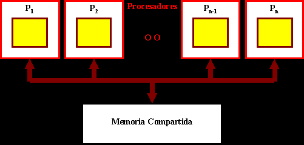

Sistema con arquitectura Von Neumann:
°El tamaño de la unidad de datos o instrucciones está fijado por el ancho del bus que comunica la memoria con la CPU.
°El tener un único bus hace que el microprocesador sea más lento.

°Las computadoras digitales convencionales presentan un aspecto Von Neumann. Este modelo consta de cinco componentes principales:

°El programa almacenado es lo más importante en el modelo. Los programas se almacenan en la memoria del equipo, junto con los datos a procesar.
Limitaciones del Modelo de Von Neumann:
°La longitud de las instrucciones por el bus de datos.
°La velocidad de operación a causa del bus único para datos e instrucciones.
Esta arquitectura utiliza los Micro controladores, tiene la unidad de proceso (CPU) conectada a dos memorias (una con las instrucciones y otra con los datos) por medio de dos buses diferentes.
Ambos buses son totalmente independientes lo que permite que la CPU pueda acceder de forma independiente y simultánea a la memoria de datos y a la de instrucciones.
Arquitectura de Multiprocesamiento:
Se denomina multiprocesador a un computador que cuenta con dos o más microprocesadores.
Arquitectura SMP:
Todos los procesadores comparten memoria.(La mayoría de los procesadores actuales poseen esta capacidad).
Arquitectura NUMA:
Cada procesador tiene acceso y control exclusivo a una parte de la memoria
